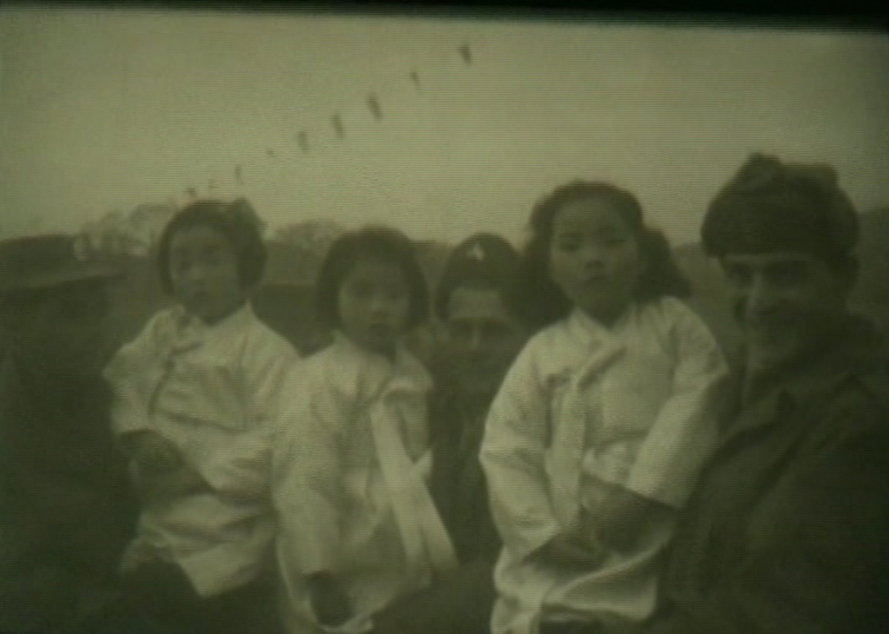

Nora Hexter
Yellow Peril, NYU Spring 2015
Growing up as a Korean American adoptee with White parents, I accepted transnational adoption—my own adoption—solely as an act of love. I understood the creation of families with babies from overseas as my own story, a story I could claim with pride. Growing up as a Korean American adoptee with White parents, I recognized that I was different from my mom and dad by the color of our skin; I did not recognize that we were also different in other critical and meaningful ways. Growing up as a Korean American adoptee with White parents, I never considered how much my adoption cost—how much I cost or why White middle-class couples chose to adopt from countries like Korea or China or why this industry or market could be problematic.
The artifact I chose for this project is the image shown here.

Taken by the United States Department of State in 1953, the photograph shows three smiling White American G.I.s holding three Korean girls, orphaned during the years of the Korean War. As someone who grew up with a normalized conceptualization of mixed-race families and of White adults with Asian children, something about this picture still struck me as uncomfortable and unsettling. Through this artifact, I was able to explore many facets of the historical and political implications of the South Korean transnational adoption system, as well as my own personal and emotional attachment to the idea of adoption. Although it has taken some time, I have come to terms with both the segmentation and integration of the personal and the political when it comes to this topic.
Since the origins of transnational adoption from South Korea following the years of the Korean War in the 1950s, approximately 200,000 children have been adopted overseas, with about seventy five percent of these children adopted to families the United States.[1] The “end” of the Korean War in 1953 left behind many orphaned children, as well as illegitimate, mixed-race children born to Korean mothers and American military fathers. Overseas adoption from South Korea quickly became institutionalized and consequently, “South Korea became the largest supplier of children to developed countries in the world.”[2] The Korean transnational adoption system ultimately became like a “surrogate welfare system for…Korean children.”[3] Ultimately, as Eleana Kim succinctly states, “a grossly under-funded social welfare system, patriarchal family ideologies and misogynistic legal codes in Korea coincided with high demand for adoptable children in the West, especially in the U.S.”[4]
Further, in the United States during the 1970s and 80s, abortion became legal and reliable birth control methods became available. This means that there was a decline in adoptable White babies, and perspective adoptive couples significantly outnumbered the number of babies available to adopt. In addition, there was also an increase in controversy over White parents adopting Black children and thus, couples wishing to adopt turned to overseas adoption. Because South Korea’s adoption “had become extremely efficient, reliable, and reportedly free from corruption,”[5] childless parents in the U.S. saw South Korean babies as the best alternative for adoption. Thus, South Korea and the United States formed a special transnational adoption relationship, with Korea depending on the United States to “import” babies.
In 1955, Harry and Bertha Holt saw images such as the artifact above and were moved by the number of Korean orphans who needed a family after losing theirs to the war. The Holts adopted eight children and eventually founded the Holt International Children’s Services. This received a great deal of media coverage and thus, many other White upper middle class couples began adopting from South Korea. The artifact that I’ve chosen has provided a deeper understanding of why these families felt so obliged to bring orphaned children into their homes and families.
In the artifact I have chosen, three of the individuals photographed are part of the United States army. The military in the United States is seen as the ultimate source of national protection and defense from outside threats. The military is often glorified and valorized as a body of force necessary in spreading the democratic ideals of this country. Further, the military is also deployed in intervening for political purposes, as in the Korean War when the U.S. entered South Korea in fears of it falling to communism. In the name of liberation, the military often asserts itself in non-Western nations to “rescue” the people from what the United States perceives as dangers of their own government or rulers.
The photograph seems to speak to the White savior complex of the Western world that asserts non-Western countries need the White West to save them from their primitive, savage ways of life. The smiles of the G.I.s in my artifact suggest that they do not fully the understand the complexities of the loss these young Korean girls will experience in their lives. Likely, their parents are dead, or have been separated from them in the war. Either way, these young girls are suddenly orphaned and likely have little chance of finding new families without the system of transnational adoption in place.
In Bertha Holt’s book The Seed from the East (1956), she recounts the events that led her and Harry to adopt eight children from Korea. After watching several films introduced to them by the President of World Vision (an organization that helps sponsor children in need), Bertha reflects on her unsettling feelings:
Then came the scenes that shattered our hearts. We saw before us the tragic plight of hundreds of illegitimate children…GI-babies…children that had American fathers and Korean mothers…children that had been hidden by remorseful mothers until it was no longer possible to keep their secret. Finally the children were allowed to roam the streets where they were often beaten by other children who had never known Koreans with blond hair…or blue eyes.
Finally, Harry decides that it’s time to take some of these children into their home:
Every night when I go to bed, I see those pictures all over again. It doesn’t make any difference where I am or what I’m doing. I think about those kids over there. I look out here at this beautiful playground God has so generously given us and something inside of me cries out at the thought of those poor little babies starving to death, or being thrown into dumps to be gnawed by rats.
Bertha and Harry, while well intentioned, echo the orientalization of Korean bodies, especially in the phrase “poor little babies.” I can’t help but see this description as patronizing and condescending, reducing these orphaned Korean babies to objects only God can rescue through the help of willing Christian adoptive parents. The Holts’ desire to save the “poor little babies” seems founded upon White guilt that simultaneously acknowledges their own privilege while also “other”-ing Korea as a foreign country in need of Western heroes.
In my artifact, the militaristic quality of the three G.I.s provides a sense of protection and paternalism. They are smiling widely which portrays the White male savior image as one that is intrinsically happy and positive—signaling to prospective adoptive families that only good things can come of their rescuing of the “poor little babies.” In terms of Yellow Peril, my artifact brings to light the tenuous nature of the origins of South Korean transnational adoption. In the image, an uncomfortable power dynamic pervades. In the idealized formation of adopted families, the power dynamic is most often not spoken of—rather, family is love, family is acceptance, family is one and the same. When the military is embedded in this idealized image of the production and creation of family, the power dynamic is more conspicuous. The military, especially one as large and as powerful as the United States’, is commonly associated with coercion and inevitably imperialism and colonization.
I like to think that my own adoption story is one of love. My parents—a White, upper middle-class college-educated couple—turned to transnational adoption when they discovered they could not reproduce on their own, and adoption seemed like their only option for having children. In the mid-1990s, years after the Korean War, images of orphaned children in a country devastated by war were not prevalent. Rather, unwed mothers struggling with the social stigma of being unmarried and poor became the common image for potential adoptive parents.
Because transnational adoptions generate approximately thirty five million dollars a year, South Korea has, in the past, prioritized sending babies overseas rather than financially assisting unwed mothers to raise their babies on their own. Further, the OECD (Organisation for Economic Co-operation and Development) has developed a social expenditure database “in order to serve a growing need for indicators of social policy.”[6] According to the OECD social expenditure, South Korea has the second lowest social expenditure following Mexico.
Adoptive parents in the United States pay approximately $30,000 to adopt a baby from South Korea. The Korean government provides single mothers with a monthly stipend of about $48. If the money from one adoption went to support a mother take care of her baby, she would receive enough monthly stipends for over 30 years. However, $48 is not nearly enough money on which support a child. Therefore, the $30,000 from an adoption could fully support the mother and her child for the first five crucial years of her child’s life.[7]
Despite Korea’s economic benefit, transnational adoptions from Korea to the U.S. have significantly decreased due to international shaming of Korea as a “baby exporting nation.” In the late 1980s, close to 8,000 babies were adopted overseas; a decade later, approximately 2,000 babies were adopted; in 2013 only 138 babies were adopted by families in the United States. Further, Korea has one of the world’s largest economies and thus, babies may not need to be “saved” from the devastation of war.
My artifact has not only allowed to me research the historical significance of transnational adoption, but also the emotional and personal. It is hard to equate my own, loving parents to the G.I.s in the photograph and it’s hard to imagine that they adopted my sister and me out of charity or on the premise of rescue or savior. But through this project, I came to wonder if Lillian and I are, nevertheless, products of orientalizing Western imperialism. Am I part of the United States’ liberation of the East from their ignorance and savagery?
I’m still not quite sure how to answer this question. I don’t think my own White parents saw Koreans or Asians as less than them and I don’t think they personally feared the East. In fact, my parents, progressively un-patriotic towards the United States, encouraged my sister and me to explore our Korean heritage in every way we could—resulting in weekly mornings at Korean school and a trip to Korea in 2004. With this artifact, I am still attempting to reconcile the White savior complex that most likely brought about the institutionalization of transnational adoption between Korea and the U.S. and the inevitable privilege I have acquired from being the daughter of White parents. This paradox has become apparent to me throughout this semester through my research.
On paper, I am White. Jewish, maybe. Eastern European. On paper, I am a White female with White parents, a U.S. citizen, a resident of Boston, Massachusetts. I arrived at Logan Airport in Boston with a Korean passport—my name was Myung Jee. As I became the daughter of Jim Hexter and Eileen Haggerty, I was naturalized into the country that once saw my birth land as incapable of standing on its own and taking care of its children. I became naturalized into the country that saw my birth land’s children as “poor little babies.” I became naturalized into the country that believed babies born in my birth land needed to be rescued and saved.
[1] Kim, Eleana. “Our Adoptee, Our Alien: Transnational Adoptees as Specters of Foreignness and Family in South Korea.” Anthropological Quarterly 80, no. 2 (April 1, 2007): 502.
[2] “Adoption History | First Person Plural | POV | PBS”, n.d. http://www.pbs.org/pov/firstpersonplural/history_southkorea.php.
[3] Kim, Eleana. “Our Adoptee, Our Alien: Transnational Adoptees as Specters of Foreignness and Family in South Korea.” Anthropological Quarterly 80, no. 2 (April 1, 2007): 502.
[4] Kim, Eleana. “Our Adoptee, Our Alien: Transnational Adoptees as Specters of Foreignness and Family in South Korea.” Anthropological Quarterly 80, no. 2 (April 1, 2007): 503.
[5] “Adoption History | First Person Plural | POV | PBS”, n.d. http://www.pbs.org/pov/firstpersonplural/history_southkorea.php.
[6] “Social Expenditure Database (SOCX)”, n.d. http://www.oecd.org/social/soc/socialexpendituredatabasesocx.htm.
[7] “Ending South Korea’s Child Export Shame – FPIF.” Foreign Policy In Focus, n.d. http://fpif.org/ending_south_koreas_child_export_shame/.